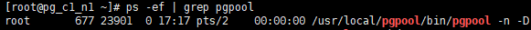
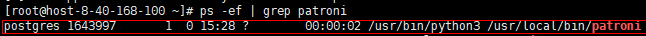
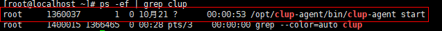
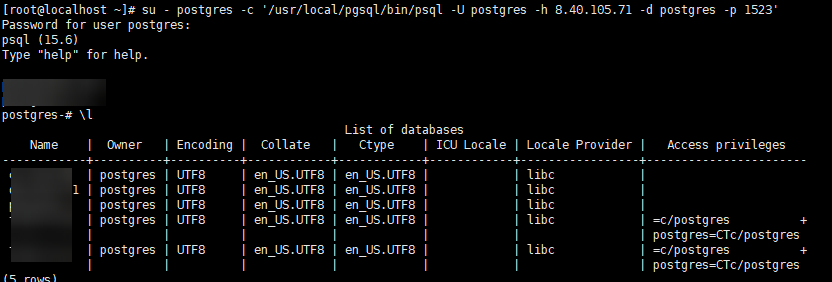
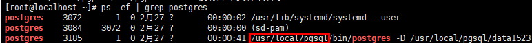

Prerequisites
- Before registering a PostgreSQL cluster instance, ensure that each host in the cluster has been registered.

All hosts in the cluster must have registered with the same database.
For details, see Step 3: Registering the Database of a Single PostgreSQL Instance.
- Before registering an instance, check whether the owner of the bin/lib/share file in the database installation path is root. If the owner is root, set enable_root to 1 in the /opt/DataBackup/ProtectClient/Plugins/GeneralDBPlugin/bin/applications/postgresql/conf/switch.conf configuration file.
- Before registering a database account, ensure that the account has the following minimum permissions. The configuration method is as follows. Account teste_bkp is used as an example.
- Login permissions: The database account must be used to log in the specified database during registration of databases in PostgreSQL cluster instances, backup, and restoration. Therefore, you must run the CREATE ROLE teste_bkp LOGIN PASSWORD 'teste_bkp'; command so that the account has the basic login permissions. In addition, run the following commands to log in to the database and view the database version. In the commands, /usr/local/pgsql/bin/psql indicates the path of the psql script, -h indicates the IP address of the host where the database instance resides, and -p indicates the port number of the database instance.
su - postgres su - postgres -c '/usr/local/pgsql/bin/psql -h Database IP address -p Port number -U teste_bkp -d postgres'
- Permissions to read the configuration file: After logging in to the database, run the GRANT pg_read_all_settings TO teste_bkp; command to set the permissions.
- Permissions to execute functions: To perform backup, you must have the execute permissions on the pg_backup_start and pg_backup_stop functions. Grant the execute permissions on the functions as follows:
If the version queried in 1 is 15.0 or later, run the following commands to grant permissions:
(1) Granting permissions to execute the pg_backup_start function: GRANT EXECUTE ON FUNCTION pg_backup_start TO teste_bkp;
(2) Granting permissions to execute the pg_backup_stop function: GRANT EXECUTE ON FUNCTION pg_backup_stop TO teste_bkp;
If the version is 9.6 or is later than 9.6 but earlier than 15.0, run the following commands to grant permissions:
(1) Granting permissions to execute the pg_backup_start function: GRANT EXECUTE ON FUNCTION pg_start_backup(text,boolean,boolean) TO teste_bkp;
(2) Granting permissions to execute the pg_backup_stop function: GRANT EXECUTE ON FUNCTION pg_stop_backup() TO teste_bkp;
If the version is earlier than 9.6, run the following commands to grant permissions:
(1) Granting permissions to execute the pg_backup_start function: GRANT EXECUTE ON FUNCTION pg_start_backup(text,boolean) TO teste_bkp;
(2) Granting permissions to execute the pg_backup_stop function: GRANT EXECUTE ON FUNCTION pg_stop_backup() TO teste_bkp;
- Login permissions: The database account must be used to log in the specified database during registration of databases in PostgreSQL cluster instances, backup, and restoration. Therefore, you must run the CREATE ROLE teste_bkp LOGIN PASSWORD 'teste_bkp'; command so that the account has the basic login permissions. In addition, run the following commands to log in to the database and view the database version. In the commands, /usr/local/pgsql/bin/psql indicates the path of the psql script, -h indicates the IP address of the host where the database instance resides, and -p indicates the port number of the database instance.
- Grant the login and streaming replication permissions to the database streaming replication user. The teste_bkp_repl account is used as an example to log in to the database. During restoration by the database streaming replication user, the standby node needs to synchronize data from the active node through the database streaming replication user. Therefore, you need to run the CREATE ROLE teste_bkp_repl LOGIN REPLICATION PASSWORD 'teste_bkp_repl'; command to grant the login and streaming replication permissions to the database streaming replication user.
- Before registering a PostgreSQL cluster, query the cluster type.
Pgpool cluster
- Use PuTTY to log in to the PostgreSQL database host.
- Run the ps -ef | grep pgpool command to check whether the cluster is a Pgpool cluster. If the command output contains fields related to pgpool, the current cluster is a Pgpool cluster. Otherwise, the current cluster is not a Pgpool cluster.
- For example, if the following command output is displayed, the current cluster is a Pgpool cluster.

- For example, if only the following information is displayed in the command output, the current cluster is not a Pgpool cluster.

Patroni cluster
- Use PuTTY to log in to the PostgreSQL database host.
- Run the ps -ef | grep patroni command to check whether the cluster is a Patroni cluster. If command output contains fields related to patroni, the current cluster is a Patroni cluster. Otherwise, the current cluster is not a Patroni cluster.
- For example, if the following command output is displayed, the current cluster is a Patroni cluster.

- For example, if only the following information is displayed in the command output, the current cluster is not a Patroni cluster.

CLup cluster
- Use PuTTY to log in to the PostgreSQL database host.
- Run the ps -ef | grep clup command to check whether the cluster is a CLup cluster. If the command output contains fields related to clup, the current cluster is a CLup cluster. Otherwise, the current cluster is not a CLup cluster.
- For example, if the following command output is displayed, the current cluster is a CLup cluster.

- For example, if only the following information is displayed in the command output, the current cluster is not a CLup cluster.
- For example, if the following command output is displayed, the current cluster is a CLup cluster.
If the CLup management page cannot be opened (for example, because the host where the CLup Server node resides breaks down or the firewall of the host where the CLup Server node resides is not disabled), or the cluster status on the CLup management page is Offline, the CLup cluster instance that has been registered with the product will be in Offline status. To restore the instance to the Online status to perform backup and other jobs, set the cluster status to Online on the CLup management page. Then, the status of the database instance on the OceanProtect WebUI is automatically changed to Online.
- To access a database instance of a PostgreSQL cluster in CLup deployment mode, perform the following steps:
Method 1:
- Log in to the CLup database management page and choose Instance > Instance List to go to the DB Instance List page.
To log in to the CLup database management page:
- Visit the URL: http://IP address:8090 (IP address indicates the IP address of the current host for a single-NIC host or the IP address selected during installation for a multi-NIC host).
- Username: admin (admin by default. If the username is incorrect, obtain it from the database administrator.)
- Password: cstech (cstech by default. If the password is incorrect, obtain it from the database administrator.)
- Select the corresponding instance and choose More > psql to access the database instance. After login, the following page is displayed:
Method 2:
- Use PuTTY to log in to the CLup Agent host.
- Run the following command to log in to the database administrator page. In the command, /usr/local/pgsql/bin/psql indicates the psql script path. -h indicates the IP address of the host where the database instance resides. -p indicates the port number of the database instance. To obtain the values of -h and -p, obtain the corresponding values of Host and Port after login by referring to 1.
su - postgres -c '/usr/local/pgsql/bin/psql -U postgres -h IP address -d postgres -p Port number'
If the login is successful, the following page is displayed:

- Log in to the CLup database management page and choose Instance > Instance List to go to the DB Instance List page.
Procedure
- Create a cluster.
- On the PostgreSQL page, click the Cluster tab.
- Click Register.
- Configure the cluster and its authentication information.
Table 1 describes related parameters.
Table 1 PostgreSQL cluster registration information Parameter
Description
Name
Enter a custom cluster name.
Type
Select Active/Standby Replication.
Virtual IP Address
Virtual IP address that is unused and in the same network segment as the IP address of the host where the PostgreSQL instance resides.
NOTE:- To obtain the virtual IP address of a Pgpool cluster, use PuTTY to log in to the PostgreSQL database host and view the delegate_IP field in the pgpool.conf file. For example, run the cat /usr/local/pgpool/etc/pgpool.conf | grep delegate_IP command to obtain the virtual IP address.
- To obtain the virtual IP address of the Patroni cluster, use PuTTY to log in to the PostgreSQL database host, view the callback script name in the Patroni configuration file, and view the VIP field of the callback script. For example, you can run the cat /etc/patroni/patroni_callback.sh | grep VIP command to obtain the VIP field of the callback script patroni_callback.sh.

- To obtain the virtual IP address of a CLup cluster, log in to the CLup database management page, choose HA Cluster > HA Management, and obtain the corresponding VIP field.
Nodes/Cluster Node
Select the host required for deploying the PostgreSQL cluster instance. If the cluster type is CLup, the selected node indicates the node where the CLup Agent is located.
Cluster Type
Available options are Pgpool, Patroni, and CLup.
CLup Server Nodes
This parameter is required when Cluster Type is set to CLup. This parameter indicates the management node of the CLUP cluster.
- To obtain the virtual IP address of a Pgpool cluster, use PuTTY to log in to the PostgreSQL database host and view the delegate_IP field in the pgpool.conf file. For example, run the cat /usr/local/pgpool/etc/pgpool.conf | grep delegate_IP command to obtain the virtual IP address.
- Click OK.
- Register the database of a cluster instance.
- On the PostgreSQL page, click the Instance tab.
- Click Register.
- Set Type to Cluster instance.
- Configure the database instance and its authentication information.
Table 2 describes related parameters.
Table 2 PostgreSQL cluster instance registration information Parameter
Description
Name
Custom username for installing the database.
Cluster
Select the cluster where the database to be registered resides.
Username
Name of the OS user who runs the database. The default username is postgres.
Pgpool Port
This parameter is not displayed when a Patroni or CLup cluster is selected.
Port used by the Pgpool service to listen on TCP/IP connections. The default port number is 9999.
Database Username
Name of the database administrator. Obtain the value from the database administrator.
Database Password
Password of the database administrator. Obtain the value from the database administrator.
Database Stream Replication Username
Username used for database streaming replication. Obtain the value from the database administrator.
Database Stream Replication Password
User password used for database streaming replication. Obtain the value from the database administrator.
- Click Add. In the displayed Add dialog box, add all nodes of the cluster instance.
Table 3 describes related parameters.
Table 3 Node information of a cluster instance Parameter
Description
Hosts
Host node in the cluster.
Database Installation Path
Installation path of the database to be registered. You can use PuTTY to log in to the PostgreSQL database host and run the ps -ef | grep postgres command to query it, as shown in the following figure.

Full Path of Patroni Configuration File
NOTE:This parameter is displayed only in 1.6.0 and later versions.
Path of the configuration file that records the Patroni cluster account, password, and ETCD information, that is, the installation path of the patroni.yml file. You can use PuTTY to log in to the PostgreSQL database host and run the ps -ef | grep patroni command to query the path, as shown in the following figure.

Pgpool Installation Path
Installation path of the Pgpool service. You can use PuTTY to log in to the PostgreSQL database host and run the ps -ef | grep pgpool command to query it, as shown in the following figure.

Service Plane IP Address
IP address of the host for the database service to receive TCP/IP connections, that is, the IP address of the host registered with the product. Obtain it from the database administrator.
Database Port
Port used by the database service to listen on TCP/IP connections. The default port number is 5432.
- Select the registered instance name of each cluster member in sequence.
- Click OK.